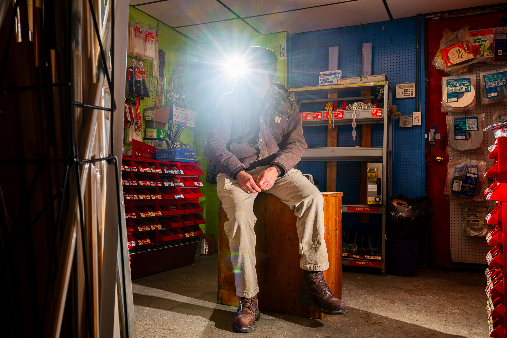

Alejandro, de 47 años y residente en Detroit, trabaja todo el día al aire libre. Se dedica a los acabados en la construcción de entradas de garajes, aceras y patios. Aunque lleva años trabajando en la construcción y sabe cómo lidiar con el calor, dice que a veces todavía se marea.
"El sol es muy intenso, tienes que estar trabajando todo el día, con la camisa completamente empapada en sudor," explica Alejandro en español.
Hace unos cuatro años, Alejandro cuenta que estaba terminando un trabajo cuando empezó a ver borroso. El hormigón se seca rápidamente y tenía que trabajar rápido bajo un calor intenso.
"Hacía mucho calor, pero tenía que terminar el trabajo bien y rápido para que el jefe no se enfadara", explica Alejandro. "Es difícil, pero te acostumbras."
A lo largo de su carrera, dijo que nunca ha visto una presentación sobre seguridad contra el calor y que los reguladores estatales no acuden a sus lugares de trabajo. Sus jefes simplemente le dicen qué trabajo tiene que hacer y dónde.
Es raro que los empleos proporcionen agua, y mucho menos almuerzo, dijo Alejandro. Planet Detroit no revela su nombre completo por temor a que las autoridades de inmigración lo persigan.
"Hay días malos en el trabajo" y, a veces, la presión aumenta, dijo. Si los empleadores proporcionaran suficiente agua, sería más cómodo trabajar con el calor, afirmó.
"Me gustaría que los gerentes nos consideraran seres humanos, no animales que trabajan sin beber," dijo.
"Me gustaría que los gerentes nos consideraran seres humanos, no animales que trabajan sin beber."
— Alejandro, trabajador de la construcción de Detroit
Alejandro dijo que trabaja en condiciones difíciles para asegurarse de que su familia tenga "todo": las facturas pagadas y comida en la mesa. Habló con Planet Detroit mientras sus hijos jugaban al fútbol en Patton Park en una tarde de verano.
"Vinimos a trabajar, no a robarle nada a nadie. Trabajamos para llevar dinero a casa," dijo Alejandro.

Con el apoyo de
Este reportaje fue producido como parte de la Beca StoryReach U.S. del Pulitzer Center.
Conozca a los becarios de StoryReachLos retos del calor salen a la luz en el centro de urgencias del suroeste de Detroit
El techo bajo el que duermes, la acera por la que caminas, el sistema de climatización que mantiene tu hogar a una temperatura agradable: cada uno de estos elementos ha sido instalado por alguien que trabaja en condiciones cada vez más calurosas.
"Incluso las personas más sanas pueden sufrir un golpe de calor o agotamiento por calor, aunque beban mucha agua. Una vez que sufren un golpe de calor, deben ser hospitalizadas."
— Christopher Noah-Sayers, asistente médico, Clínica de Urgencias Acadian
Christopher Noah-Sayers, asistente médico de la clínica Acadian Urgent Care Clinic, situada en el barrio de Springwells, al suroeste de Detroit, afirmó que durante el verano de 2025 atendió "al menos" a un trabajador a la semana por enfermedades relacionadas con el calor.
Los trabajadores al aire libre en la construcción, los tejados o el paisajismo llegan con "la cara muy roja" por erupciones cutáneas o agotamiento por calor, dijo.
"Cualquiera que trabaje al aire libre no tiene muchos descansos a la sombra, y muchos de ellos piensan que basta con beber suficiente agua," dijo Noah-Sayers. "Acaban sufriendo un golpe de calor."
Tomar descansos frecuentes a la sombra es esencial para prevenir los golpes de calor, dijo Noah-Sayers, y muchos trabajadores al aire libre siguen adelante sin hacerlo.
"Incluso la persona más sana puede sufrir un golpe de calor o agotamiento por calor, aunque beba mucha agua," afirma Noah-Sayers. "Una vez que sufren un golpe de calor, necesitan ser hospitalizados."
Según el Servicio Meteorológico Nacional, el calor es la principal causa de muerte relacionada con el clima en Estados Unidos. Entre 2011 y 2024, el calor se cobró la vida de cuatro trabajadores en Míchigan.
El calor mata a más estadounidenses que los huracanes o los tornados, pero la gente no percibe el peligro de la misma manera dramática, y hasta hace poco, tampoco lo hacían los responsables políticos.
Según sus registros, la Administración de Seguridad y Salud Ocupacional de Míchigan tiene constancia de cuatro muertes relacionadas con el calor en el lugar de trabajo: en 2011, 2016, 2020 y 2024.
Los efectos del calor sobre la salud suelen estar infrarrepresentados y mal diagnosticados, según declaró a Planet Detroit un investigador de la Universidad Estatal de Michigan especializado en el tema del calor en el lugar de trabajo.
El 30 de agosto de 2024, la Administración Federal de Seguridad y Salud Ocupacional (OSHA) propuso una norma de prevención de lesiones y enfermedades causadas por el calor que obligaría a los empleadores a planificar medidas contra los riesgos del calor en sus lugares de trabajo.
Si se aprueba, la histórica norma propuesta aclararía las obligaciones de los empleadores y las medidas necesarias para proteger a los empleados del calor peligroso. El objetivo final es prevenir y reducir el número de lesiones, enfermedades y muertes laborales causadas por el calor.
La OSHA ha concluido las audiencias públicas sobre la norma propuesta y tomará una decisión sobre cómo proceder una vez que se cierre el expediente de la audiencia, según ha declarado un portavoz de la agencia.
La versión de 2021 de la norma publicada en el Registro Federal incluye un capítulo sobre el cambio climático. En la versión actual de 2024, no se mencionan las palabras "cambio climático."
Según la versión anterior de la norma, "el cambio climático está aumentando la frecuencia y la intensidad de los episodios de calor extremo... y los trabajadores se enfrentarán a un mayor riesgo de enfermedades relacionadas con el calor debido a la exposición al mismo."
Mientras tanto, los latinos, que están sobrerrepresentados en la construcción, la industria alimentaria y la manufactura —sectores que se encuentran en primera línea del riesgo climático— siguen viéndose afectados por el calor, pero existen pocas medidas de protección para salvaguardarlos del aumento de las temperaturas.
Las personas de origen hispano o latino representaban casi la mitad de la población activa nacida en el extranjero en 2024, según la Oficina de Estadísticas Laborales.
El trabajo en la autopista es "como una sauna"
Luis Hernández, un trabajador de la construcción jubilado de 69 años y residente en Wyandotte, esperaba con ilusión un viaje de invierno a México cuando habló con Planet Detroit en septiembre.
Esa noche, sus hijos adultos estaban de visita para cenar en su casa, que cuenta con una gran sala de estar con techos altos. El camino hasta la casa estaba marcado por un hermoso paisaje con líneas curvas y flores de colores.
Esto es por lo que trabajó: una casa cómoda y tiempo para estar con su familia. Su disfrute se ve empañado por la pérdida de audición y la fisioterapia para los problemas de espalda, que atribuye a sus 24 años de trabajo en la construcción de autopistas.
En sus años de trabajo en proyectos financiados por el estado, Hernández dijo que ayudó a construir tramos de la I-75, la I-94, la autopista John C. Lodge y los aeropuertos de Detroit, Kalamazoo y Flint.
Durante la mayor parte de su carrera, Hernández trabajó con un equipo de otras cuatro personas en la construcción de pozos de registro para los desagües de las autopistas. Los trabajos comenzaban a 9 metros de profundidad en el fondo de un agujero, y los trabajadores subían en espiral por el cilindro, colocando los desagües bloque a bloque. Un trabajador levantaba un bloque de entre 7 y 14 kilos, y Hernández lo colocaba con cemento.
Cada alcantarilla tardaba aproximadamente una hora en completarse, dijo. En verano, Hernández dijo que las alcantarillas parecían "una sauna."
"Sentía que me asfixiaba porque había mucha condensación," dijo en español. "Cuando salí, parecía un ratón que se había caído en un cubo de agua."
El equipo tenía que permanecer "en el agujero" hasta terminar el trabajo: sin agua ni comida hasta que salían, e incluso entonces, tenían que comer mientras trabajaban, dijo.
"Tienes suerte si tienes un lugar donde comer. Si te quedas sin agua, se acabó," dijo Hernández.
Debido a la falta de agua, Hernández dijo que a menudo sentía que iba a desmayarse en el trabajo.
"Llegó un momento en que tuve que llevar un poco de sal conmigo porque no te daban nada. No te dejaban ir a la tienda a comprarla. Quiero decir, era muy difícil," dijo.
Hernández fue enviado a casa mientras trabajaba en la I-94 en 2009.
"Solo nos enviaron a casa una vez. Hacía mucho, mucho, mucho calor," dijo. "Pero a partir de entonces, nunca más se preocuparon por nosotros."
Hernández dijo que siempre le duele la espalda y se siente cansado.
"Es el precio que pago por todos esos años de duro trabajo físico," dijo Hernández.
Algunos lugares de trabajo están mejorando, dijo Hernández. Sus hijos trabajan en la construcción del puente internacional Gordie Howe, donde se suministra a los trabajadores "bastante" agua mineralizada, afirmó.
Detroit se calienta
En 2024, se batió el récord de temperatura media en la superficie terrestre, que fue la más cálida de la historia desde que se empezaron a registrar estos datos en 1880, según la NASA.
El tercer año más cálido fue 2025, según el registro de temperaturas globales de la Administración Nacional Oceánica y Atmosférica, que se remonta a 1850.
Desde 1970, la temperatura media anual en Detroit ha aumentado 4,1 grados Fahrenheit, según Climate Central, una organización sin ánimo de lucro dedicada a la comunicación climática.
El efecto de isla de calor urbano, en el que las altas temperaturas y la humedad se combinan para crear valores peligrosos en el índice de calor, es una preocupación importante para Detroit y otras zonas urbanas similares, según un resumen climático de Michigan de 2022 de la NOAA.
Los trabajadores urbanos al aire libre pueden enfrentarse a temperaturas más altas que los trabajadores rurales debido al efecto de isla de calor urbano, que puede elevar las temperaturas de la ciudad entre 18 y 27 °F durante el día y entre 9 y 18 °F durante la noche en comparación con las zonas periféricas, según la Agencia de Protección Ambiental.
El índice de calor es un indicador de la sensación térmica que percibe el cuerpo, y mide la temperatura real del aire y la humedad relativa. Ante las altas temperaturas y la elevada humedad, al cuerpo le cuesta más enfriarse, ya que la intensa humedad ralentiza la evaporación del sudor, lo que provoca un peligroso estrés térmico.
Aumento de los días con índice de calor en Detroit
Días adicionales al año en comparación con la referencia de 1979 · 1979-2023
Fuente: Conjunto de datos Gridmet, Servicio Meteorológico Nacional · Análisis de Climate Central.
Entre 1979 y 2023, Detroit experimentó 10 días más al año con un índice de calor de 80 °F o más; nueve días más de alerta cada año, con un índice de calor de entre 80 y 94 °F; y un día adicional de peligro en el que el índice de calor era de 95 °F o más.
Las estadísticas proceden del conjunto de datos gridMET elaborado por un laboratorio de climatología de la Universidad de California y el Servicio Meteorológico Nacional.
Las oficinas locales de la agencia meteorológica emiten una alerta de calor extremo cuando estas condiciones son posibles, y avisos de calor extremo cuando se produce o está a punto de producirse un calor peligroso.
Un estudio publicado en la revista científica internacional británica Nature reveló que, en la segunda mitad del siglo XXI, la exposición de los estadounidenses al calor extremo aumentará "entre cuatro y seis veces con respecto a los niveles observados a finales del siglo XX."
Las temperaturas mínimas nocturnas se han calentado más rápidamente que las máximas diurnas, lo que puede reducir las oportunidades de alivio durante las olas de calor, según una asociación para la adaptación climática de los Grandes Lagos.
Las olas de calor más frecuentes y las condiciones de humedad elevan el riesgo de muertes y enfermedades relacionadas con el calor.
Los trabajadores al aire libre pagan el precio del calentamiento climático
🗳️ Caja de herramientas para la acción cívica
Por qué es importante
Los trabajadores al aire libre y los que realizan labores manuales, muchos de los cuales son latinos, se enfrentan a un calor cada vez más intenso y peligroso con pocas protecciones, lo que provoca enfermedades, lesiones y muertes que se podrían evitar. Detroit se está calentando más rápido que en décadas anteriores, lo que aumenta el riesgo para los trabajadores que construyen y mantienen infraestructuras esenciales.
¿Quién toma las decisiones públicas?
OSHA: Se está considerando una nueva norma nacional sobre el calor que obligaría a los empleadores a poner en práctica planes de seguridad contra el calor.
OSHA de Michigan: Vela por la seguridad en el lugar de trabajo, realiza inspecciones y consultas; carece de una norma específica sobre el calor.
Los empleadores y los líderes del sector son quienes deciden si adoptar voluntariamente prácticas de seguridad contra el calor mientras las regulaciones se quedan atrás.
Próximas reuniones
Acciones cívicas: lo que tú puedes hacer
Qué hay que tener en cuenta a continuación
¿Has tomado medidas? Háznoslo saber.
Recursos cívicos recopilados por Planet Detroit
Los trabajadores de la construcción representan el 6% del total de la población activa de EE. UU., pero suponen más de un tercio de todas las muertes laborales relacionadas con la exposición al calor, según un estudio publicado en la revista American Journal of Industrial Medicine.
Los trabajadores al aire libre se enfrentan de manera desproporcionada a mayores riesgos para la salud relacionados con el calor, especialmente en trabajos que implican actividades extenuantes como palear, serrar manualmente, empujar y tirar de cargas pesadas o caminar a paso rápido, según las instrucciones del Programa Nacional de Énfasis del Departamento de Trabajo de los Estados Unidos, un programa temporal que centra los recursos de la OSHA en un peligro concreto.
A partir de abril de 2022, el programa sobre riesgos relacionados con el calor en exteriores e interiores amplía la iniciativa de prevención de enfermedades relacionadas con el calor de la agencia, con el objetivo de fomentar las intervenciones tempranas de los empleadores para prevenir enfermedades y muertes de los trabajadores en condiciones de calor extremo.
Cuando el índice de calor es de 80°F o más, las enfermedades y lesiones graves relacionadas con el calor en el trabajo se vuelven más frecuentes, según la OSHA.
Entre 1992 y 2022, un total de 986 trabajadores estadounidenses de todos los sectores industriales fallecieron por exposición al calor, incluidos 334 trabajadores de la construcción, según datos de la Oficina de Estadísticas Laborales.
Las lesiones, enfermedades y muertes relacionadas con el calor en el trabajo son en gran medida evitables, según el Sistema Nacional Integrado de Información sobre la Salud y el Calor, una creación de la NOAA y los Centros para el Control y la Prevención de Enfermedades.
Sin embargo, Laurel Harduar Morano, profesora asociada e investigadora de salud pública de la Universidad Estatal de Míchigan, afirmó que faltan normas y protecciones integrales a nivel nacional para los trabajadores que se enfrentan al calor.
'En el ámbito laboral, una sola muerte ya es demasiado'
MIOSHA no define una temperatura específica que sea demasiado alta para trabajar, y la agencia estatal no tiene una norma sobre el calor.
En su lugar, MIOSHA anima a los empleadores a poner en marcha elementos de un programa de prevención de enfermedades relacionadas con el calor para reducir el riesgo de padecerlas en el trabajo.
Los empleadores están obligados a informar a MIOSHA de cualquier muerte relacionada con el trabajo en un plazo de ocho horas y de las hospitalizaciones en un plazo de 24 horas.
La norma nacional sobre calor propuesta por la OSHA cubriría a todos los empleadores bajo la jurisdicción de la OSHA que trabajen en interiores o exteriores cuando el índice de calor sea de 80°F o más, la temperatura a la que los daños graves se vuelven más frecuentes, según el Departamento de Trabajo.
Los empleadores con menos de 10 empleados no estarían obligados a tener un plan escrito de prevención de lesiones y enfermedades por calor, sino que comunicarían las instrucciones verbalmente, según la norma propuesta.
La Ley de Seguridad y Salud Ocupacional de 1970, administrada por la OSHA, no cubre a los trabajadores autónomos, a los familiares directos de los empleadores agrícolas ni a los trabajadores cuyos riesgos están regulados por otra agencia federal.
Los trabajadores cuyos riesgos están regulados por otra agencia se encuentran en campos como la minería, la energía nuclear, muchos aspectos de las industrias del transporte y los empleados de los gobiernos estatales y locales, a menos que se encuentren en uno de los estados que aplican un plan estatal aprobado por la OSHA, según el Departamento de Trabajo.
En virtud del plan estatal de Míchigan, las pequeñas explotaciones agrícolas y los empleadores pueden seguir estando sujetos a la aplicación de la ley, las inspecciones y las obligaciones de cumplimiento de la MIOSHA, incluso en los casos en que la OSHA pueda estar restringida.
Los comentarios posteriores a la audiencia sobre la norma federal propuesta sobre el calor se aceptaron hasta el 30 de octubre de 2025. La OSHA ha concluido las audiencias públicas como parte del proceso de elaboración de normas en curso, dijo Juan Rodríguez, subdirector regional de la región este del Departamento de Trabajo, que supervisa la OSHA.
"Una vez que se cierre el expediente de la audiencia, el departamento lo tendrá todo en cuenta y tomará una decisión sobre cómo proceder," afirmó Rodríguez en una declaración enviada por correo electrónico.
El largo camino hacia una norma térmica
La Ley de Seguridad y Salud Ocupacional crea la OSHA, autorizando al gobierno federal a inspeccionar los lugares de trabajo y exigiendo a los empleadores que proporcionen un lugar de trabajo "libre de riesgos reconocidos."
El NIOSH publica el primer documento de criterios en el que se recomiendan normas relacionadas con el calor. Revisado en 1986.
El NIOSH revisa los criterios relativos al calor y establece unos criterios formales para una norma sobre el calor, aunque sigue siendo solo una recomendación.
El presidente Biden firma una orden ejecutiva que sienta las bases para el Plan de Acción Climática del Departamento de Trabajo, que prioriza "la seguridad de los trabajadores como una cuestión importante para la resiliencia climática."
La OSHA publica un memorándum sobre la iniciativa contra el calor y el Programa Nacional de Énfasis se amplía para cubrir los riesgos relacionados con el calor tanto en exteriores como en interiores. Michigan adopta el Programa Estatal de Énfasis.
La OSHA propone una norma histórica para la prevención de lesiones y enfermedades causadas por el calor para los empleadores de todo el país.
Se cierra el período de comentarios públicos. La OSHA concluye las audiencias como parte del proceso normativo en curso.
Kristin Osterkamp, directora del programa de MIOSHA, afirmó que la agencia estatal ha registrado un aumento del 30% en las consultas sobre el calor en los últimos tres años, desde que se creó el programa estatal.
Las temperaturas están aumentando en Míchigan y, en el último año, 225 empleadores solicitaron consultas sobre el calor, afirmó. Se trata de una gran variedad de empleadores de sectores como la construcción y el paisajismo, así como de lugares de trabajo interiores, como obras industriales sin aire acondicionado.
"Es una clara señal de que los empleadores están colaborando con nosotros antes de que se produzca un problema," afirmó Osterkamp.
"En el ámbito laboral, una sola muerte ya es demasiado. Nuestros formadores trabajan a diario con los empleadores para implementar planes que garanticen la seguridad de nuestros trabajadores, sin esperar a que se produzca una muerte."
— Kristin Osterkamp, gerente del programa MIOSHA
Anima a los empleadores a pensar en los detalles: quién supervisa las alertas por calor, cuáles son los niveles de activación en esos días y cuál es su plan cuando suben las temperaturas.
No todos los empleadores llaman, dijo. MIOSHA intenta estar presente en las conferencias del sector, dijo Osterkamp, y añadió que quiere que los empleadores consideren a los reguladores estatales "accesibles y no se sientan intimidados."
"Lo que me preocupa es que la gente no vaya a informar de los síntomas a tiempo, y que no sean conscientes de la necesidad de controlar su estado," dijo Osterkamp.
Sin una normativa sobre el estrés térmico, Osterkamp se ve obligada a aplicar la cláusula federal de obligación general, una disposición general que exige a todos los empleadores proporcionar un lugar de trabajo libre de riesgos.
"En el ámbito laboral, una muerte ya es demasiado," afirmó Osterkamp. "Nuestros formadores trabajan a diario con los empleadores para implementar planes que garanticen la seguridad de nuestros trabajadores, sin esperar a que se produzca una muerte."
Empresas que lo hacen bien
A pesar de no existir una norma nacional, un empresario del norte de Míchigan afirmó que aplica medidas de protección contra el calor porque sus empleados son "el alma" de la empresa.
Paul Mahon, director sénior de proyectos de Grand Traverse Construction en Traverse City, completó la formación sobre seguridad contra el calor de MIOSHA en el verano de 2025.
Según él, la formación le ayudó a «perfeccionar» sus prácticas de seguridad contra el calor, como añadir estaciones para lavarse las manos y métodos de refrigeración.
Los 58 empleados de la empresa prestan servicios comerciales e industriales en todo el norte de Míchigan, entre los que se incluyen la colocación de cimientos, aceras y losas de hormigón; la realización de trabajos de carpintería en escuelas y centros comerciales; y la colaboración con los municipios en la construcción y modernización de plantas de tratamiento de aguas residuales y potables.
Las temperaturas estivales en Traverse City han alcanzado una media de 25 °C en los últimos tres años. Según el Servicio Meteorológico Nacional, la temperatura en esta ciudad del norte de Míchigan alcanzó los 34°C a finales de junio de 2025.
"Hemos visto esos días en pleno verano en los que el calor es bastante agobiante y la humedad es alta," afirmó Mahon.
Una semana antes de los días con índices de calor elevados, Mahon envía recordatorios a sus equipos para que planifiquen en consecuencia. Abastece todos los lugares de trabajo con agua, neveras portátiles y bebidas electrolíticas, y planifica descansos en remolques refrigerados durante las horas de mayor temperatura, lo que permite a los empleados recuperarse.
"Simplemente intentamos mantener las mismas prácticas que siempre hemos seguido. No nos oponemos a gastar dinero para garantizar la seguridad de todos," afirma Mahon.
"No nos oponemos a gastar dinero para garantizar la seguridad de todos."
— Paul Mahon, Grand Traverse Construction
La formación sobre concienciación sobre el calor que imparte Mahon orienta a los empleados sobre los signos del estrés térmico y cómo superarlo.
"Con las condiciones del verano, nos enfrentaremos a algunos días de calor extremo... solo tenemos que asegurarnos de que todo el mundo tenga los conocimientos necesarios y no se vea afectado por el calor," afirma Mahon.
Algunos empleados de Grand Traverse Construction son latinos, según Mahon. Según datos de la Oficina del Censo de los Estados Unidos, los latinos representan el 4% de la población de Traverse City y el 8% de los residentes de Detroit.
Mahon dijo que los buenos empleadores se preocupan por sus empleados: "sin ellos no somos nada," afirmó. Si un empleador no mira hacia el futuro ni proporciona el equipo adecuado, tiempo de descanso adicional y recursos, esto repercute en los empleados, dijo.
"Es una situación muy mala. Nosotros no funcionamos así como empresa y tampoco esperamos que otras empresas lo hagan," dijo Mahon.
"Así que hay que cuidar a los empleados en todos los ámbitos."